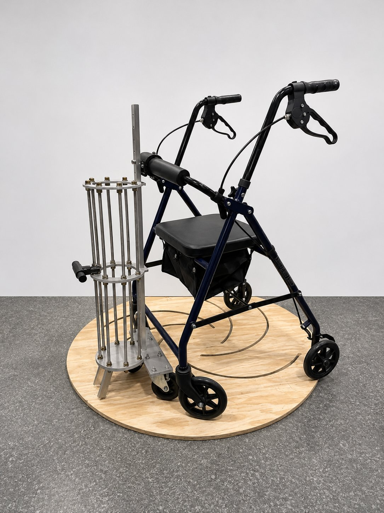
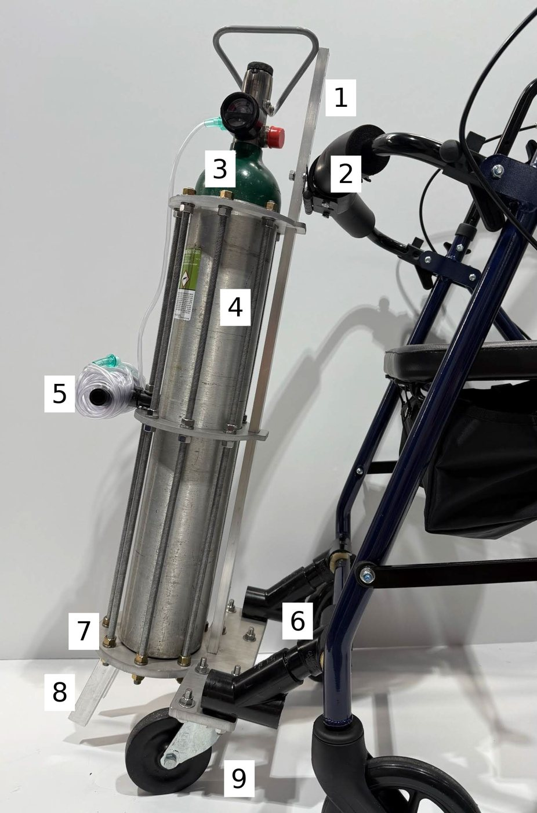
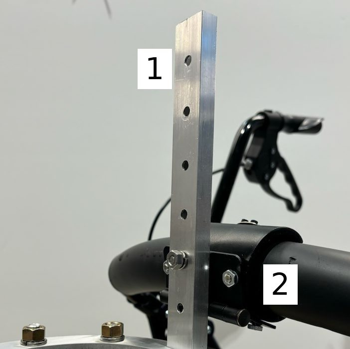
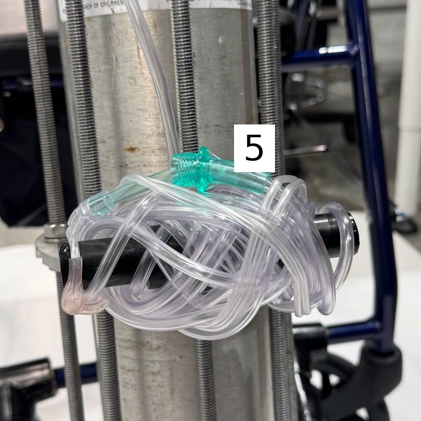
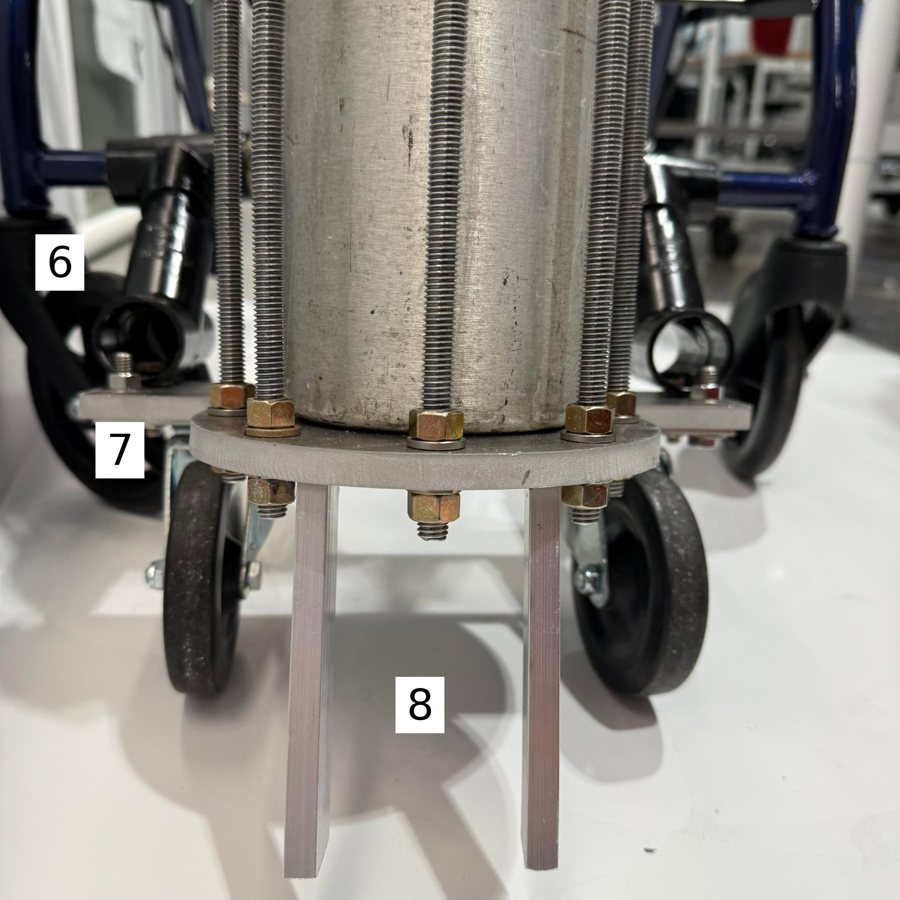
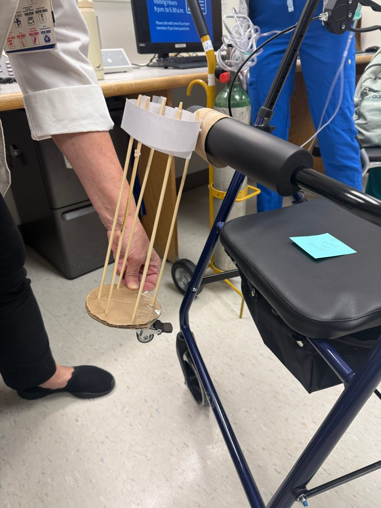
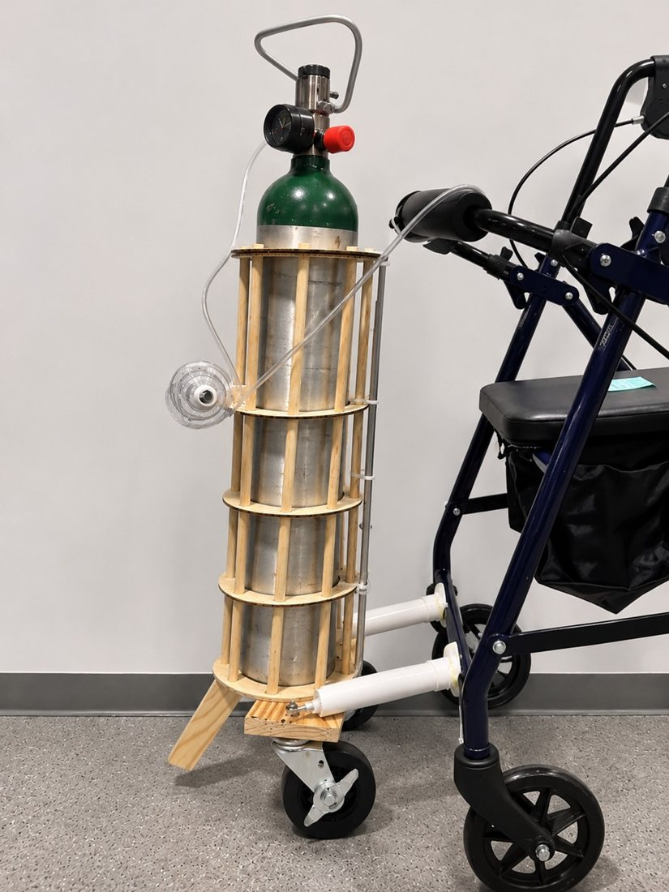
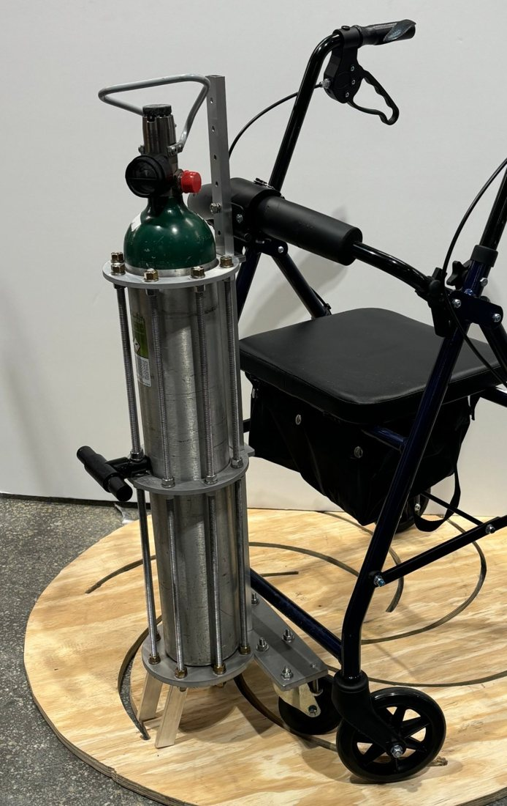

Oxygen-Canister Mount for Duke Hospital Rollators
My team developed a wheeled aluminum cage that carries a heart-surgery patient’s oxygen on their rollator, so a second staff member no longer has to follow behind.
The problem
Patients recovering from heart surgery at Duke Hospital walk the halls with a rollator during recovery. The existing setup needed two staff members, one to guide the patient and one to roll the oxygen, which limited patient independence and strained staff time.
Our approach
We followed the engineering design process: defined seven criteria with measurable targets, narrowed 50+ ideas with Pugh screening and a weighted scoring matrix, and built three rounds of prototypes before final testing.

Skills applied
- Meeting with the client to discuss their needs and determine the optimal solution
- Matrix evaluation to determine the best solution to the problem
- CAD modeling in SolidWorks
- Waterjet cutting and machining
- Part sourcing and assembly
- Test plan design and user testing
The system

- 1Aluminum back support with height selector
- 2PVC attachment to rollator
- 3Waterjet-cut aluminum rings
- 4Aluminum threaded dowels
- 5PVC cannula holder
- 6PVC second point of attachment
- 7Waterjet-cut aluminum base
- 8Aluminum legs for upright storage
- 9Rubber 360° wheels



Iterations


Testing

| Criterion | Test | Result |
|---|---|---|
| Center of mass reduce tipping angle <10° | Lift the board until the rollator tips; protractor angle, 20 trials with and without the device | 6° ✓ |
| Rollator function walking area <10% lost; seat folds | Ruler measurement and fold check, 2 trials | 0%, folds ✓ |
| Tank exchange Likert ≥3.5 | 30 testers of varying ages and fitness | 4.3/5 ✓ |
| Dimensions ≤6 in past rollator | Measuring tape, device and tank attached, 2 trials (6 in is door-frame clearance) | 8 in ✗ |
Some photo backgrounds have been digitally cleaned up.